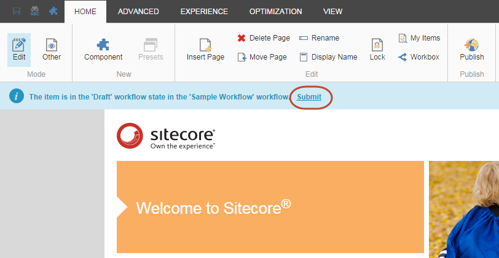

次のワークフロー状態にアイテムを移動¶
ワークフローの対象となるアイテムは、公開する前にすべてのワークフローの状態を通過する必要があります。新しいアイテムを作成すると、そのアイテムは自動的に初期のワークフロー状態に置かれます。アイテムは、ワークフロー コマンドを使用して次のワークフロー ステートに移動するまで、初期ワークフロー ステートのままです。
注釈
管理者は、これらのワークフロー状態のいずれかを上書きして、状態を介してアイテムを移動したり、任意の時間にアイテムを公開したりすることができます。
ワークフロー内にある既存のアイテムを編集すると、Sitecore はそのアイテムの新しいバージョンを作成し、ワークフローの初期状態に配置します。後日、このアイテムを再度編集する場合は、別のバージョンを編集することを指定しない限り、ワークフロー内のバージョンを編集します。
アイテムを編集して次のワークフロー状態に移動する¶
コンテンツ アイテムを次のワークフロー状態に送るには
コンテンツ エディタまたはエクスペリエンス エディタで、関連するアイテムまたはページに移動します。
注釈
お使いの Sitecore のセットアップによっては、アイテムを編集したり、ワークフローのステータスを変更したりする前に、アイテムをロックする ( アイテムのロックとロック解除 ) ように促されることがあります。
アイテムを編集し、変更内容を保存します。
アイテムがワークフロー内にある場合は、利用可能なワークフロー コマンドが表示されます。
コンテンツ エディタの [レビュー] タブの [ワークフロー] グループ。
エクスペリエンス エディタでは、通知バーに表示されます。
次の例では、ワークフロー コマンド [送信] が表示されているため、現在のワークフローの状態でこのアイテムに適用 できる唯一のワークフロー コマンドです。
{kind=link}
エクスペリエンス エディター¶
{kind=link}
該当するワークフローコマンドをクリックして、次のワークフロー状態にアイテムを送信します。
表示されたダイアログ ボックスで、編集したページに関するコメントを入力し、[OK] をクリックします。
これでアイテムは次のワークフロー状態になり、通知バーに新しいワークフロー コマンドが表示されます。現在のワークフロー状態でアイテムを編集する権限がない場合は、アイテムをロックして 編集することはできず、ワークフロー コマンドは表示されません。
{kind=link}
{kind=link}